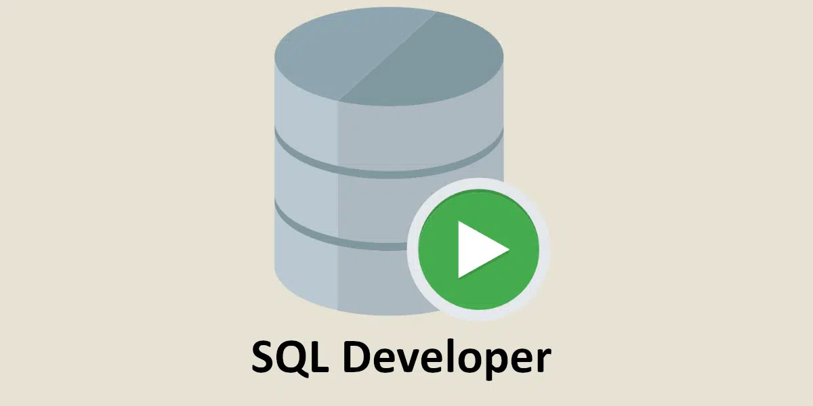

Portfolio Étudiant S1
Bonjour, je suis Fady Djerlil
Étudiant en BUT Informatique à l'IUT d'Orsay. Passionné par le développement, la modélisation 3D et les nouvelles technologies.

Étudiant en BUT Informatique à l'IUT d'Orsay. Passionné par le développement, la modélisation 3D et les nouvelles technologies.
Actuellement en première année de BUT Informatique à l'IUT d'Orsay, je m'intéresse particulièrement à la conception et au développement d'applications.
Ce portfolio a pour but de présenter mon parcours, mes compétences techniques acquises lors de mes cours et projets, ainsi que mes centres d'intérêt.
Acquisition de compétences en développement (Java, C++, Python, Web), bases de données, réseaux et systèmes.
Spécialités : Mathématiques / NSI (Numérique et Sciences Informatiques) / Physique-Chimie.
Environnements :
 Français
Français
 Anglais
Anglais
Esprit d'équipe
Polyvalence
Investissement
Créativité
Réactivité
À l'écoute
Esprit critique
Persévérance
Voici quelques exemples de réalisations effectuées durant ma formation, mes stages ou sur mon temps libre.
Création d’une page web dans le cadre d’un projet de refonte du site internet du lycée, visant à présenter les différentes formations et matières proposées. J’ai codé entièrement la page en HTML et JavaScript et réalisé le visuel en CSS. Ce projet m’a introduit à la création de sites web ainsi qu'aux langages de programmation, et a permis au lycée d’avoir des pages web créées par leurs propres étudiants.

Création d'un jeu vidéo 2D en utilisant une interface simplifiée de la bibliothèque SDL dans le cadre d’un projet à l’IUT d’Orsay.

J’étais en charge de la gestion des stocks pharmaceutiques, de la mise en rayon, du tri selon les normes en vigueur, ainsi que de la préparation des commandes.
Création du site web d’une agence de voyage fictive en équipe dans le cadre d’un projet à l’IUT d’Orsay.

Installation et sécurisation d'un poste et d’un serveur sur Raspberry Pi 400 selon les recommandations de l'ANSSI dans le cadre d’un projet à l’IUT d’Orsay.

Conception d'une base de données d'entreprise dans le cadre d’un projet à l’IUT d’Orsay.